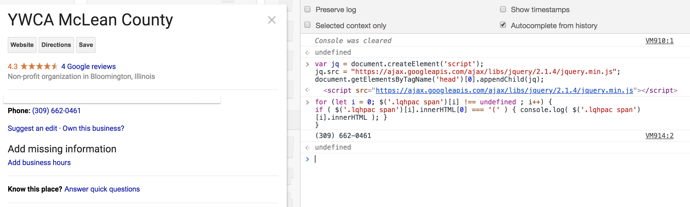

tinyscraper
Looking up the YWCA's phone numbers with tinyscraper. GIF made with Giphy.
Manually typing out phone numbers to use for SpeedDial was brutallllll
Suddenly, console commands
Thanks to jQuery and the Chrome console, I figured out how to collect the phone numbers from the page of a Google search of an organization in a state (for ex, "Dairy Queen in Illinois"). I would enter code, wait a millisecond, get phone numbers back.
Getting the (in this case, only one) YWCA phone number from the search page with jQuery, JS, and the console.
However, rewriting the phone numbers in JavaScript syntax became brutallllll
Suddenly, string formatting
Thanks to string manipulation, I changed the code used so the console would output a copy-paste ready JavaScript array of the phone numbers.
However, pasting the console code and looking up the organization in every state became brutallllll
Suddenly, Chrome extension
I built a tool, tinyscraper, that makes a Google search for the phone numbers from every state in the USA of an organization I specify.
For example, if I want the phone numbers for the YWCA, I would input "YWCA" in an input field and submit it.
In response, tinyscraper collects the HTML for "ywca phone number [name of state here]" for every state and searches the HTML for the phone numbers.
tinyscraper would output the phone numbers in a JS-ready dictionary, thereby producing a very large dictionary with state abbreviations as the keys and an
array of phone numbers as the values.
Thanks to code, I was able to write code to help me write other code.
What would originally have taken days (to look up and collect multiple organizations!) now takes a few seconds, thanks to a few hours of work -- a significant fraction of the former.
---
Code is a tool.
Vivek
Thank you for visiting!
Vivek Bhookya